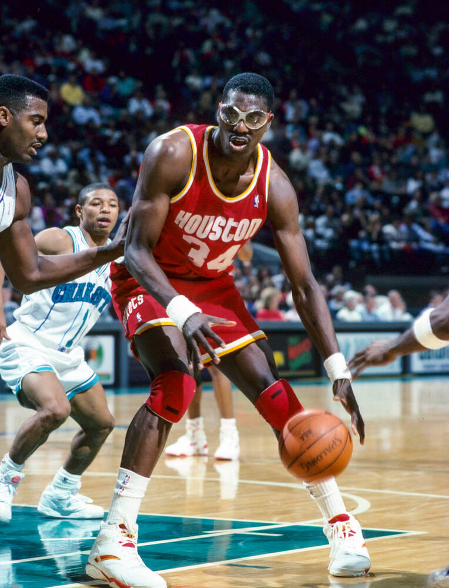

Houston Rockets — АҚШ-тың Техас штатындағы Хьюстон қаласында орналасқан кәсіби баскетбол командасы. Олар NBA-ның Батыс конференциясының Оңтүстік-Батыс дивизионында ойнайды. Команда 1967 жылы Сан-Диегода құрылған, ал 1971 жылы Хьюстонға көшіп, қазіргі атауын алды. Rockets өз ойындарын Toyota Center аренасында өткізеді. Команда аты затына сай — әр дәуірде жарылғыш шабуылымен және жұлдыз ойыншыларымен танымал.
Rockets тарихындағы ең табысты кезеңдер 1990 жылдардың ортасына сәйкес келеді. Бұл кезде команданың басты жұлдызы — доминантты орталық Хаким Оладжьювон болды. Оның бірегей аяқ жұмысы, қорғаныстағы шеберлігі және шешуші лақтырулары командаға 1994 және 1995 жылдары қатарынан екі чемпиондық әкелді. Ол кезең Rockets-ті NBA-ның элиталық клубтарының қатарына қосты.
2010-жылдардың соңында команда қайтадан жарып шықты. Джеймс Харден басқарған Rockets лиганың ең қауіпті шабуылшыларының біріне айналды. Харден бірнеше маусым қатарынан ұпай королі атанып, 2018 жылы NBA MVP марапатын алды. Ол Rockets-ті бірнеше рет плей-оффтың жоғары кезеңдеріне жеткізді.
Қазіргі уақытта Houston Rockets жас таланттардан жаңа команда құрып жатыр. Жейлен Грин, Алпере́н Шенгюн сияқты болашағы зор ойыншылар төңірегінде қайта құрылу жүріп жатыр.

Хаким Оладжьювон — Houston Rockets тарихындағы ең үздік ойыншы. «The Dream» лақап атымен танылған ол NBA тарихындағы ең техникалы орталықтардың бірі. Оладжьювон Rockets-ке екі чемпиондық әкеліп, финалдың да, маусымның да MVP атақтарын жеңіп алған жалғыз орталықтардың бірі. Оның №34 жейдесі клубтан мәңгілікке retirada етілген.